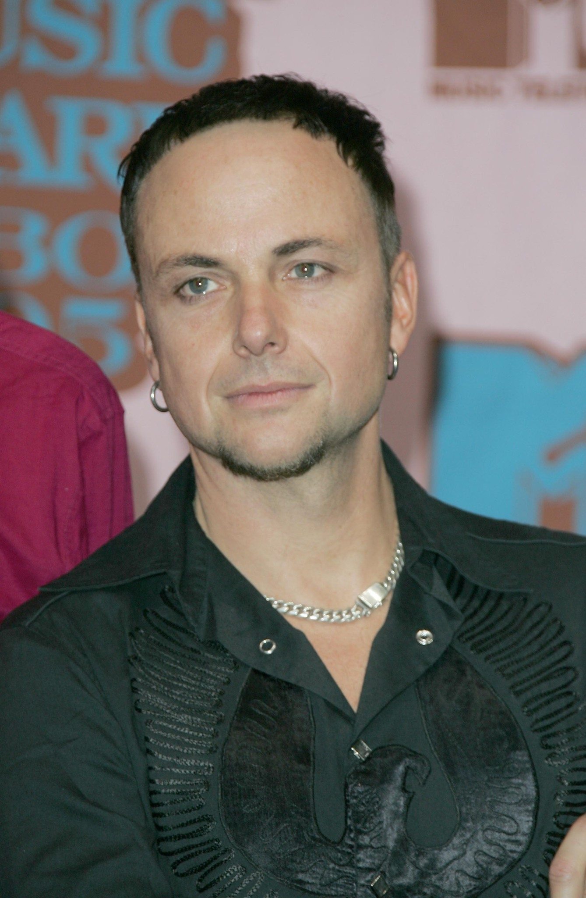

Członkowie Zespołu
| Muzyk | Instrument | Od kiedy w zespole | Zdjęcie |
|---|---|---|---|
| Till Lindemann | Wokal | 1994 | |
| Richard Kruspe | Gitara prowadząca | 1994 |  |
| Christoph Schneider | Perkusja | 1994 |  |
| Oliver Riedel | Gitara basowa | 1994 |  |
| Paul Landers | Gitara rytmiczna | 1994 |  |
| Christian "Flake" Lorenz | Keyboardy | 1994 |
Albumy

Herzeleid
Rok wydania: 1995

Sehnsucht
Rok wydania: 1997

Mutter
Rok wydania: 2001

Reise, Reise
Rok wydania: 2004

Rosenrot
Rok wydania: 2005

Liebe ist für alle da
Rok wydania: 2009

Rammstein
Rok wydania: 2019

Zeit
Rok wydania: 2022